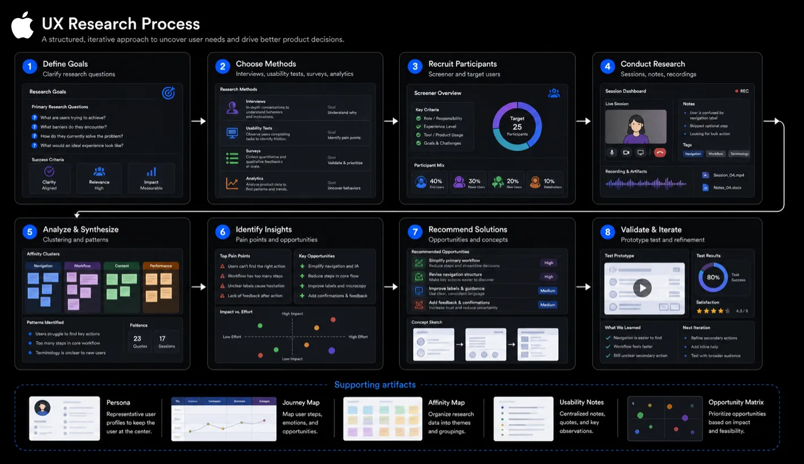
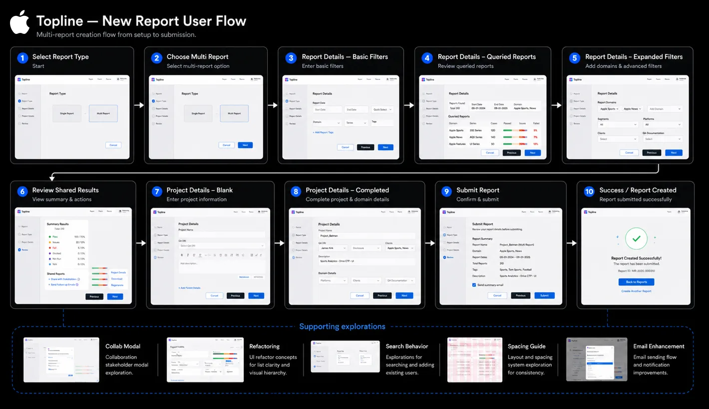
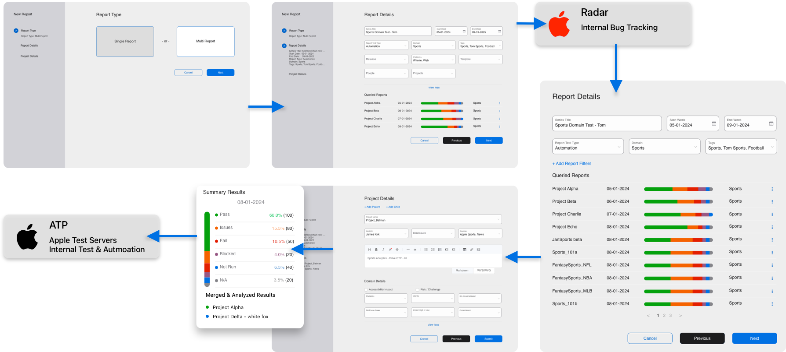

Case Study
Apple Topline
Leading the rebuild of an enterprise reporting experience that increased data-to-insight velocity by 20% and improved decision confidence.

My Role

Dashboard
I led product strategy, research, interaction design, workflow architecture, and prototyping. I also established design-system foundations with Product, Data, and Platform Engineering.
Created scalable component patterns and contribution guidance for parallel teams and multiple reporting workflows.
Credits / Team: Product, Data, Platform Engineering, Research
Tools: Figma, FigJam, Radar, ChatGPT, workflow mapping, prototyping
Background
Turning fragmented reporting into a faster, more trustworthy workflow.
Topline unified fragmented reporting workflows into a guided experience for generating, validating, and interpreting enterprise data.
Disconnected tools, inconsistent report structures, and manual validation slowed teams and made outputs harder to trust.
The challenge was operational and cognitive: fragile queries, inconsistent language, and workarounds created unreliable outputs.
How might we make complex reporting faster, clearer, and easier to trust?
Research
Finding where reporting friction and trust broke down.

Existing report-creation flow showing where filtering, setup, and system feedback created friction.
I used stakeholder interviews, contextual inquiry, workflow mapping, and lightweight AI-assisted synthesis to identify friction and organize early research findings.
Research exposed fragile query building, inconsistent actions, weak hierarchy, unclear labeling, and limited system feedback. AI helped cluster themes and explore early design questions, while the product direction remained grounded in user evidence, workflow constraints, and validation.
The deeper issue was confidence: users needed to understand how reports were built, what they meant, and whether they were reliable.
Strategy
A smarter, guided reporting model for enterprise teams.

Restructuring the product model and workflow foundations behind Topline.
The product direction focused on clarity, usability, and scale.
Early AI-assisted exploration helped frame the initial query-building problems, compare interaction approaches, and pressure-test edge cases. The resulting direction was a guided, transparent reporting workflow—not an AI-driven product experience.
A centralized design system for charts, tables, filters, alerts, navigation, and edge states created a scalable foundation.
Solution
A clearer flow connected report setup, Radar context, and results.

The workspace combined project context, reporting artifacts, and metadata in one view.
The Guided Query Builder clarified field discovery, query intent, and report logic. Inline validation, reusable presets, clear system feedback, and improved error states reduced friction.
Modular dashboards supported saved views, templates, and dense-data readability through better hierarchy and controls.
Alerts, ownership states, rationale tracking, and audit visibility strengthened trust, while Radar added related bugs and metadata.
Design System
Reusable foundations for dense enterprise data products.
I created tokenized foundations for color, typography, spacing, and light/dark parity, then extended them into reporting components.
Reusable charts, tables, filters, alerts, navigation, and edge states improved consistency and scale.
Impact
Faster insight, stronger confidence, and scalable delivery.
The redesign increased data-to-insight velocity by 20%, reduced reporting friction, and improved trust in generated outputs.
The design system supported parallel delivery with reusable patterns and stronger design-to-development consistency.
Takeaways
What the work reinforced about complex enterprise reporting.
01
Speed matters, but confidence determines whether enterprise tools succeed.
02
Guidance should reduce cognitive load without hiding logic. Clear system feedback, validation, and transparency build trust.
03
Design systems create value when they support real workflow complexity.